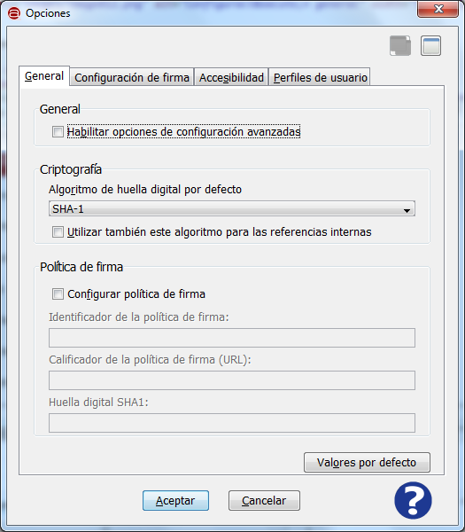
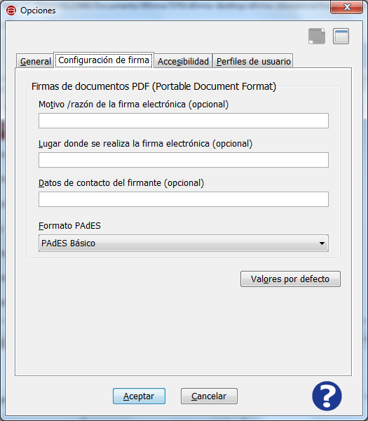

Es posible acceder a las opciones de configuración de la Interfaz de Escritorio del Cliente @firma mediante el
elemento "Opciones del menú "Herramientas".

La pantalla de Opciones presenta, en concreto, 4 pestañas con las distintas opciones de configuración.
General

Los elementos disponibles en esta pantalla son:
- General:
- Habilitar opciones de configuración avanzadas: Esta opción habilita la vista avanzada de la Interfaz de Escritorio.
- Tecla de acceso rápido: b
- Criptografía:
- Algoritmo de huella digital por defecto: Es el algoritmo que se debe utilizar para ejecutar las firmas electrónicas.
Por defecto se utilizará SHA-1 (SHA1withRSA). No se recomienda modificar este valor salvo que se esté seguro que el formato de
firmas y el almacén de certificados que se desea utilizar soportan este algoritmo.
- Tecla de acceso rápido: r
- Utilizar también este algoritmo para las referencias internas XML: Esta opción permite que las referencias internas
de las firmas XML se realicen con el algoritmo seleccionado.
- Tecla de acceso rápido: u
- Política de firma:
- Configurar política de firma: Habilita la generación de firmas EPES. Cuando se generen firmas en
formatos CAdES, XAdES y PAdES se les aplicará la política de firma definida.
- Identificador de la política de firma: Identificador de la política. Puede ser un OID o una URL.
- Ruta de la política de firma (URL): Ruta de la versión legible de la política (Opcional).
- Huella digital SHA1: Huella digital en base 64 con algoritmo SHA1 de la política.
- Valores por defecto: Restablece los valores por defecto para esta pestaña de configuración.
Puede consultar las propiedades de configuración de la política de firma de la
AGE en el apartado Política de firma de la AGE
Antes de configurar la política de firma de facturas electrónicas consulte el
apartado Facturas electrónicas
Configuración de firma

Los elementos disponibles en esta pantalla son:
- Firmas de documentos PDF:
- Motivo / razón de la firma electrónica: Establece el motivo asociado a las firmas PDF que se generen.
- Lugar donde se realiza la firma electrónica: Establece la localización asociada a las firmas PDF que se generen.
- Datos de contacto del firmante: Establece la información de contacto de quien genera la firma PDF.
- Formato PAdES: Formato básico sobre el que se construyen las firmas PAdES. Permite los valores:
- PAdES Básico: Es el formato de firma PAdES generado por Adobe Acrobat y el utilizado por defecto por el Cliente @firma.
- PAdES-BES: Es el formato que más se ajusta al estándar PAdES, pero Adobe Reader/Acrobat no valida correctamente las multifirmas generadas a partir de él.
- Valores por defecto: Establece los valores por defecto para esta pestaña de configuración.
Accesibilidad
Consulte la ayuda de esta sección desde el apartado Opciones de accesibilidad
Perfiles de usuario
Consulte la ayuda de esta sección desde el apartado Perfiles de usuario
Al pulsar el icono de ayuda se muestra la ventana de ayuda para el menú "Opciones de configuración".
- Tecla de acceso rápido para el botón de Ayuda: h